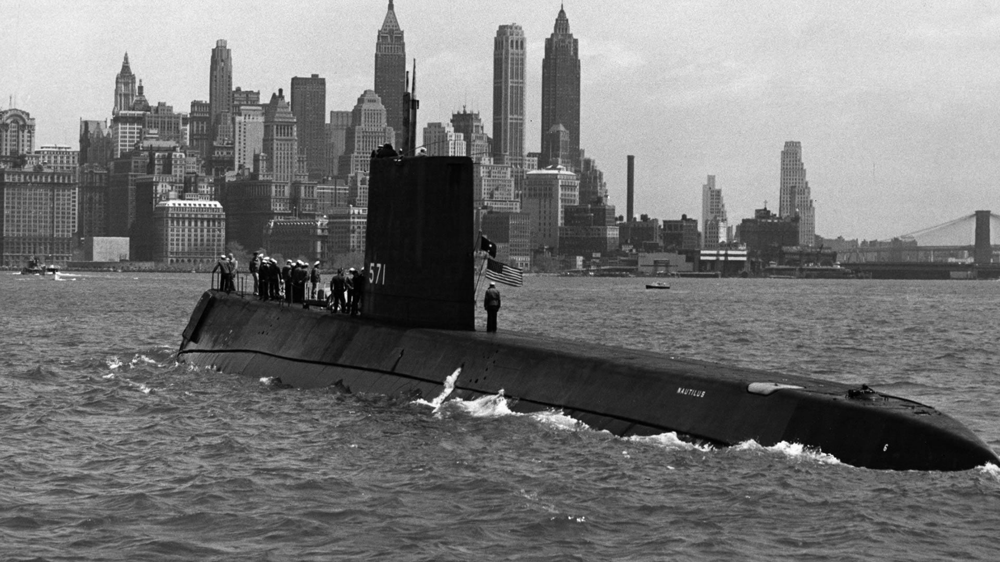

What is the Navy?
The Navy was founded in 1775 and has since protected the countries surrounding waters. The Navy has also played a major role not only in the U.S; but all around the world as it has protected our allies in other nations. The Navy also protects the nations water transportation such as imports from other counties and protecting them from pirates. The Navy also remains as the worlds most powerful Navy and it protects the fiber-optic cables in the sea to protect the nations internet connection. The Navy is the main powersurge of help during natural disasters as its the first branch to arrive to hurricane affected areas, earthquakes, and other catrastophic casualties around the nation.

Biggest Achievement
The biggest achievement made by the U.S. Navy is nuclear propulsion. Nuclear propulsion has become the United States best way to move their ships but mainly submarines and aircraft carriers. Having nuclear reactors on-board, allows the ships to work for months before having to ever refuel, they do still need aircraft fuel mainly on aircraft carriers. Nuclear propulsion has changed the world as it's now the most efficient way to power naval ships without spending millions and millions of dollars in boat fuel. While having a nuclear reactor on-board may be more expensive due to maintenance crew it is far more efficient as the support flee is nuclear powered.
The worlds first nuclear power ship
How to Join The Navy?
To enlist in the , there are steps you must follow:
For more information you can visit .com